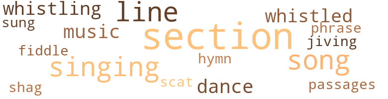
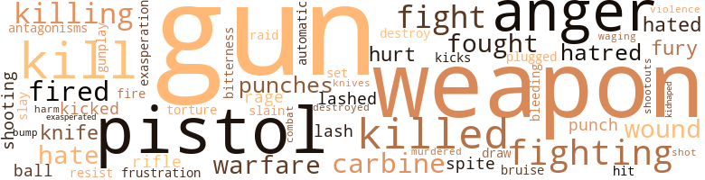

Totem, by Jackson, Blyden (1975)
42 music-related terms matched in this text.
Most frequent terms in this topic: section (9); song (5); singing (5); lines (3); whistling (2)
dance.n.01
Definition: an artistic form of nonverbal communication
| word | sentence |
|---|---|
| dance | Even as time runs , it would be long , and only by a cleansing of all the African peoples would we once again see the sun of spring and know the feel of the land , the joy of the dance , the beauty of music and the love and unity of family . |
| dance | Billy Boy knew he was fighting for his life now , and without actually thinking , he stepped close to the powerful short man , catching another blow to his ear which made colored spots dance in front of his eyes , as he drove his knee into the short man 's balls , jerking his arm down and back to free his gun hand . |
hymn.n.01
Definition: a song of praise (to God or to a saint or to a nation)
| word | sentence |
|---|---|
| hymn | Black men from all over America , as varied in hue and facial structure as the many tribes of Africa , called out for this blues song , that gospel hymn , and as soon as she 'd start a song they would all join in . |
jive.v.01
Definition: dance to jive music; dance the jive
| word | sentence |
|---|---|
| jiving | He turned to Billy Boy , who was now shucking and jiving with Marty . |
music.n.01
Definition: an artistic form of auditory communication incorporating instrumental or vocal tones in a structured and continuous manner
| word | sentence |
|---|---|
| music | While her voice was anything but good , she had a sense of music , and soon everyone in the cafe was singing with her . |
| music | Even as time runs , it would be long , and only by a cleansing of all the African peoples would we once again see the sun of spring and know the feel of the land , the joy of the dance , the beauty of music and the love and unity of family . |
passage.n.06
Definition: a short section of a musical composition
| word | sentence |
|---|---|
| passages | " Thank ya , child , thank ya , " the old woman said , then sat for a short while reading slowly , her lips moving silently , through a number of passages . |
phrase.n.02
Definition: a short musical passage
| word | sentence |
|---|---|
| phrase | Adib thought Billy Boy a strong man for admitting a lack of knowledge , then , puzzled , asked him what the phrase " dig it " meant . |
scat.n.01
Definition: singing jazz; the singer substitutes nonsense syllables for the words of the song and tries to sound like a musical instrument
| word | sentence |
|---|---|
| scat | When he had finished , he refilled Billy Boy 's glass , poured himself a small brandy , and returned to his scat . |
section.n.01
Definition: a self-contained part of a larger composition (written or musical)
| word | sentence |
|---|---|
| section | Orders were sent to the Minister for Internal Security who immediately ordered his communications section to make radio contact with Colonel Van Raalt , who had assumed personal command of the 10-10 team . |
| section | Present were Chief Inspector Haagen , head of the military section of Internal Security , Henri Boore , Secretary of Home Affairs , Professor Burnham , specialist in African Affairs , and the just arriving Colonel Van Raalt , Commander of Counter-Terrorist Forces . |
| section | This section is surrounded by an electric wire fence , with guard towers every fifty yards , manned by machine-gunners . |
| section | The second section of the prison consists of a large brick building four stories high , shaped like an H . |
| section | Once inside the building , orienting themselves to the layout which they had studied so carefully on paper , the three cut away from the kitchen crew and turned to the right and down a flight of stairs which brought them to the basement of the administrative section . |
| section | They moved quietly through the various storage facilities in the seldom-used area , encountering no one , as the janitor had predicted , until they came to a bolted door operated by an electronic lock which acted as a fire door for the top security section on the other side . |
| section | He called on all his skill , under great pressure , carefully jumping various wires until , smiling , he accomplished his task , and the three of them stepped into a small alcove in the maximum security section , which opened onto a long corridor . |
| Section | Section Chief Barron broke the silence . |
| Section | " I want a copy of the false legend written out and sent over to the Psychological Section for a quick run-through . |
| section | The orphanage where he was assigned at the time had a system of locked gates that kept the children in - " for their own safety , " the director had always explained to visitors - first in one section of the building , then another , according to the time of day and scheduled activity . |
| section | They found their seats in the three-across section and locked their seat belts in place . |
shag.v.01
Definition: dance the shag
| word | sentence |
|---|---|
| shag | The poverty of his childhood still weighed heavily on him , and without his gadgets , machines , deep shag rugs and good alcohol he often fell into depression and felt trapped by the world around him . |
sing.v.02
Definition: produce tones with the voice
| word | sentence |
|---|---|
| singing | Because they were in France , and the French were famous for singing when the nation was in trouble or met victory , and with the help of a bottle of good wine , Angie had climbed to the tabletop and had begun singing the Black National Anthem . |
| singing | Fear gripped him , for his blows had no effect on them - they just grinned at him with their full , white teeth , and even began singing a happy African song . |
| sung | Behind her came his black Nanny , who had nursed him as an infant , who had rocked him and sung him to sleep , who even now bathed him and dressed him and cared for him when he was hurt or sick . |
singing.n.01
Definition: the act of singing vocal music
| word | sentence |
|---|---|
| singing | Because they were in France , and the French were famous for singing when the nation was in trouble or met victory , and with the help of a bottle of good wine , Angie had climbed to the tabletop and had begun singing the Black National Anthem . |
| singing | While her voice was anything but good , she had a sense of music , and soon everyone in the cafe was singing with her . |
| singing | He became a " model detainee , " and six months later , on his seventeenth birthday , Marty made his way through the maze of complicated locks that held him in , picked out a brand new sports car parked on a nearby street , switched its license plates , and drove away through the cold winter night with all the windows down and the icy wind whipping his face , singing at the top of his voice . |
song.n.01
Definition: a short musical composition with words
| word | sentence |
|---|---|
| song | Black men from all over America , as varied in hue and facial structure as the many tribes of Africa , called out for this blues song , that gospel hymn , and as soon as she 'd start a song they would all join in . |
| song | Black men from all over America , as varied in hue and facial structure as the many tribes of Africa , called out for this blues song , that gospel hymn , and as soon as she 'd start a song they would all join in . |
| song | And they found the laws , for the laws were always there , that brought all man in line with the great God and all flowed like the water in a great and rapid river or the beat that underlies a mighty song of praise . |
| song | Then , our informant says that she burst out in a great joyous song and all who were present said afterwards that they had felt a great power in the room then . |
| song | Fear gripped him , for his blows had no effect on them - they just grinned at him with their full , white teeth , and even began singing a happy African song . |
tune.n.01
Definition: a succession of notes forming a distinctive sequence
| word | sentence |
|---|---|
| lines | in some kind of pseudo-religious movement that crosses tribal lines , are joined by those who carry our history in their heads , we will indeed face a serious problem . |
| lines | Look at the fine lines , the delicate cuts that make up the face . |
| line | It had been a family line that included one of the leading medicine men along the entire west coast of Africa , as well as a distant cousin who had gained fame in as wide an area for his understanding of the ways of the land , and a great-great-great-great-grandfather who had reached the high position of storyteller and was considered by the council of elders in his time to be one of the best in a long line of tribal storytellers . |
| line | Hannah Darkwater herself had attended services regularly over the years , one of a long line of Darkwaters who had been members almost from the church 's founding . |
| lines | " Let 's move forward along those lines , talk to some of our people at Harvard and the University of Chicago . |
violin.n.01
Definition: bowed stringed instrument that is the highest member of the violin family; this instrument has four strings and a hollow body and an unfretted fingerboard and is played with a bow
| word | sentence |
|---|---|
| fiddle | As he listened to the distant shouts of his fellows at play , he began to fiddle with the lock , more out of boredom than any conscious design . |
whistle.v.01
Definition: make whistling sounds
| word | sentence |
|---|---|
| whistling | Africans on the street fled in every possible direction as the machine gun leveled another blast , bullets whistling through the air and bouncing off the side of the now riddled car . |
| whistling | He hear them whites laughin ' behind him and he dig his toes and his fingers into the earth and tighten down on all his muscles and on come the second lash , whistling through the air , tearin ' up the flesh left on his back . |
| whistled | He whistled softly to himself . |
| whistled | " If you find it , double " Billy Boy whistled . |
257 violence-related terms matched in this text.
Most frequent terms in this topic: gun (29); pistol (22); anger (21); kill (16); weapon (15)
aggravation.n.01
Definition: an exasperated feeling of annoyance
| word | sentence |
|---|---|
| exasperation | Billy Boy muttered to himself , looking at the ceiling in exasperation . |
anger.n.01
Definition: a strong emotion; a feeling that is oriented toward some real or supposed grievance
| word | sentence |
|---|---|
| anger | His hands clasped tightly behind him , his tiny legs wide-spread , M'Ku stood facing the door , his anger now turning into cold fury . |
| anger | But she rose up in anger , so that her voice and her anger were dreaded throughout the whole of the countryside where we lived . |
| anger | But she rose up in anger , so that her voice and her anger were dreaded throughout the whole of the countryside where we lived . |
| anger | It was the way she said " Hot Chocolate " that caused the flash of anger in Billy Boy 's gut , yet even then he was amazed how quickly the happy look left her face and was replaced with an anger in her eyes that paralleled his own . |
| anger | It was the way she said " Hot Chocolate " that caused the flash of anger in Billy Boy 's gut , yet even then he was amazed how quickly the happy look left her face and was replaced with an anger in her eyes that paralleled his own . |
| anger | Billy Boy watched her , his feelings confused , a mixture of anger and longing . |
| anger | Professor Coffer spoke slowly , to keep the anger from his voice . |
| anger | Once again he saw the anger flash in her eyes , but she maintained control . |
| anger | Once again Billy Boy felt the mixture of anger and longing , surprised to hear himself saying , " Okay . |
| anger | Though he blamed himself for the kidnaping , he showered his anger on the rest of the team . |
| anger | " All of southern Africa is still held by the white enemy , from Angola , across to Rhodesia ... " he paused , the anger clear on his hard , black face . |
| anger | The anger in his voice was close to hatred . |
| anger | History now shows that it was the Mandingo people who , in anger , led a revolt against these invaders and finally drove them out of the valley and back across the desert . " |
| anger | When he still did n't move , her anger turned cold and direct , there was an urgency to what she was doing that was beyond what had happened . |
| anger | . . . and he put his hand up between my . . . " She was caught completely off guard by Billy Boy 's speed as he threw the glass against the wall , spun around and moved to her so quickly that she had no time to be surprised , and when he reached down and pulled her up by her hair , she screamed in surprise and anger . |
| anger | He slapped her three times so fast and hard that the pain made her dizzy , but cut through the anger that was now out of control . |
| anger | He lit a cigarette , and anger and hate washed over him . |
| anger | For the first time in his life he was experiencing genuine physical anger . |
| anger | Then , completely misjudging the situation , and letting his anger and imagination get the better of him he lunged for his pistol , coming up with the weapon level . |
| anger | Mac 's readiness to beat on people and Billy Boy 's sudden anger at this stubborn black fool who would n't obey his commands caused the error . |
| anger | M'Ku began pacing again , and five minutes later , as his anger and impatience were about to explode , an efficient knock sounded at the door . |
automatic_rifle.n.01
Definition: light machine gun
| word | sentence |
|---|---|
| Automatic | Belgian Automatic pistol into the right-hand pocket of his crumpled suit . |
bleeding.n.01
Definition: the flow of blood from a ruptured blood vessel
| word | sentence |
|---|---|
| bleeding | Black men , some half-clothed , some naked , many bleeding , were lined up on their stomachs on muddy streets in front of their barracks . |
bruise.n.01
Definition: an injury that doesn't break the skin but results in some discoloration
| word | sentence |
|---|---|
| bruise | " You must have gotten a bruise from that sharp corner on the table , " he said , letting her lean on him as he guided her to the curtained entrance of the little hallway that led to the rest rooms . |
bump.n.01
Definition: a lump on the body caused by a blow
| word | sentence |
|---|---|
| bump | Akman and Billy Boy relaxed as the plane taxied , took off , and climbed to cruising altitude , while Marty sweated out each noise and bump , getting as close to praying as he had been since he was a little boy . |
carbine.n.01
Definition: light automatic rifle
| word | sentence |
|---|---|
| carbine | Abu answered , cocking his carbine . |
| carbine | " I think that a couple of pistols and this carbine ai n't gon na get us through , that 's what I think . " |
| carbine | Abu gripped the carbine tighter , tensing for the move . |
| carbine | The first African , pushing the breakfast cart , paused at the doorway looking directly at Abu Akman , who was standing with his carbine leveled at the door . |
| carbine | One of the day guards stepped into the guard 's chamber , and without a word , Abu jammed the carbine up against his neck , motioning for him to be silent . |
| carbine | The guard made a sudden move toward the desk in a futile effort to push the alarm button , only to have his hand broken by the butt of Abu 's carbine . |
destroy.v.04
Definition: put (an animal) to death
| word | sentence |
|---|---|
| destroy | In addition , we must track down every rumor , piece together every story , and if the Totem exists , we must find it and destroy it ! '' |
| destroyed | " Remember , " Barron added , " I also want the reputation of this Adib destroyed absolutely . |
draw.v.23
Definition: pull (a person) apart with four horses tied to his extremities, so as to execute him
| word | sentence |
|---|---|
| draw | He pressed so close to Billy Boy that it seemed an attempt to draw strength and courage and hope from him . |
engage.v.07
Definition: carry on (wars, battles, or campaigns)
| word | sentence |
|---|---|
| waging | When he had last been in Mozambique fighting against the Lumumba Regiment of the Mozambique Freedom Army , it had become clear to him that many of the junior line officers of the Portuguese Army itself were openly talking about their inability to win the war they had been waging for more than ten years . |
fight.n.02
Definition: the act of fighting; any contest or struggle
| word | sentence |
|---|---|
| fighting | Did n't France 's most famous general finally end the fighting in Algeria ? " |
| combat | With the headphones of the closed-circuit stereo system acting as his inter-plane communications system , he imagined himself receiving encouragement from his admiring crew , those tough combat veterans who had nothing but awe for their commander , and who marveled at the fact that he had managed to bring the badly-damaged plane this far . |
fight.n.05
Definition: a boxing or wrestling match
| word | sentence |
|---|---|
| fight | Her life , like yours , was a fight to avoid what she had to do . |
| fight | He took a large gulp of air in relief as Akman and Marty burst through the curtain , changing the tide of the fight . |
| fight | At forty-four , he was a veteran of the ongoing fight to curtail the infiltration of trained " terrorists , " as the African liberation fighters were called . |
| fight | He finally got into a fist fight in a run-down bar , and left the next morning for New York . |
| fight | They stood there - the policeman , veteran of the streets of New York , a bullet still lodged behind his right knee , scars front and back of another that had passed through his left shoulder , other scars from knives and clubs and chains ; and his friend , whose body also bore the scars of his fight in the street for survival , of his fight for the things that make life livable . |
| fight | They stood there - the policeman , veteran of the streets of New York , a bullet still lodged behind his right knee , scars front and back of another that had passed through his left shoulder , other scars from knives and clubs and chains ; and his friend , whose body also bore the scars of his fight in the street for survival , of his fight for the things that make life livable . |
fight.v.02
Definition: fight against or resist strongly
| word | sentence |
|---|---|
| fighting | " You 're fighting your role in life . |
| fight | One should not fight what the stars and God have laid out for him . " |
| fought | The visions which she fought so hard against took much from her . |
| fought | But many of the great ancestors of the African people stood up and fought the joker , and tried to find ways to help those whose duty it was to lead the African people in the ways of goodness . " |
| fight | " Many of the great leaders and medicine men were struck with visions and talked in voices not their own , for their ancestors continued to fight , and they raised up chickens and goats and cried out why ? |
| fighting | We have been fighting for the liberation of our homeland for a long time . |
| fighting | It has taken us years to train and build a fighting force , to develop an underground , to find weapons and develop leadership . |
| fighting | You 're not standing there telling me that the Portuguese generals are going to end the fighting out here ! " |
| fighting | " Look at me ! " she demanded , fighting to control her voice . |
| fighting | " No ! " she shouted back , and he lashed out at her again , slapping at her face and shoulders and breasts , fighting to keep his hands from closing into fists and unable to look at her so he could keep on slapping . |
| fighting | When he had last been in Mozambique fighting against the Lumumba Regiment of the Mozambique Freedom Army , it had become clear to him that many of the junior line officers of the Portuguese Army itself were openly talking about their inability to win the war they had been waging for more than ten years . |
| fought | Unable to call his partner down in front of civilians , he often found himself having to participate when victims fought back , even when he knew it was wrong . |
| fighting | Billy Boy knew he was fighting for his life now , and without actually thinking , he stepped close to the powerful short man , catching another blow to his ear which made colored spots dance in front of his eyes , as he drove his knee into the short man 's balls , jerking his arm down and back to free his gun hand . |
| fighting | He was now constantly monitoring the actions , movements and supporters of the various liberation groups fighting against the Portuguese , the Rhodesians , and the South Africans . |
| fought | As Mallery fought his way up on one level , Vinson paralleled him on his own , each helping the other as they went . |
| fought | He fought to control himself , succeeding quickly , as only children who must constantly guard their emotions can . |
frustration.n.03
Definition: a feeling of annoyance at being hindered or criticized
| word | sentence |
|---|---|
| frustration | Angie looked down once more , gave a little cry of frustration , then reached back and punched him as hard as she could in the stomach . |
fury.n.01
Definition: a feeling of intense anger
| word | sentence |
|---|---|
| fury | His hands clasped tightly behind him , his tiny legs wide-spread , M'Ku stood facing the door , his anger now turning into cold fury . |
| rage | And she slapped out at him , searching out his face , wanting badly to land just one blow that would cause pain , but her thin arms were too weak and his rage too strong . |
| fury | The filthy bastard ! " he hissed in fury . |
| fury | He sat there for almost five minutes , staring straight ahead , his initial fury giving way to numbness . |
| rage | He had seen the results of raids on outlying farms and police-military posts , witnessed the rage and vengeance of the terrorists . |
gun.n.01
Definition: a weapon that discharges a missile at high velocity (especially from a metal tube or barrel)
| word | sentence |
|---|---|
| gun | Marty and Abu , hesitating when they became aware of the gun , allowed the man they had punched to the floor half in and half out of the curtain , to come back to his feet . |
| gun | The Major , keeping his gun level at Billy Boy , backed toward the rear exit with his men . |
| gun | " There must be some kind of heavy weapon - machine gun , probably - hidden right there at the bend . |
| gun | " Okay , that means we got to get that machine gun . " |
| gun | If the gun is there , it should be about twenty feet in . |
| gun | " Take'em out , then turn that damn gun across the clearing and pour it on , because Marty and I are going visiting to see who 's in the brush on the other side of the trail . '' |
| guns | This nigger got me running around in the jungle , now he wants me to run into a bunch of trees where he thinks folks are waiting with guns ! |
| gun | " Got to move that gun up with you , or they ai n't gon na keep their heads down over there and you guys wo n't make it across the clearing . " |
| gun | Just keep it up until the gun is empty . |
| gun | Angie jerked the weapon up in front of her , breathed deeply , sighted down the barrel of the gun as Billy Boy had shown her and squeezed the trigger . |
| gun | Billy Boy and Abu led their team across the roadway , the machine gun in Abu 's hands exploding into life . |
| gun | " Well get your gun , honey , and do it in , " Billy Boy responded , laughing . |
| gun | The man was standing next to a battered wooden desk , on the top of which lay a Thompson submachine gun , a plate of half-eaten food and a bottle of wine . |
| guns | The Colonel moved the Third Regiment of the Fourth Division to the edge of the Soweto ghetto , and at 3 a.m. the sweep of Soweto began , with armored vehicles carrying mounted light machine guns and troops armed with semiautomatic weapons . |
| gun | The weight of the gun pulled the already ill-fitting jacket down even further on the right side , causing even Abu Akman to grin slightly and shake his head from side to side . |
| gun | " You black and you got the gun ! |
| gun | Marty shouted as he saw the muzzle of the machine gun poke out the tinted back window , throwing Angie to the ground as the first blast shattered the front windshield of the rented car . |
| gun | Africans on the street fled in every possible direction as the machine gun leveled another blast , bullets whistling through the air and bouncing off the side of the now riddled car . |
| gun | He stood up , aware that the machine gun in the back of the limousine was pointing directly at him , and fired two shots at the men just as they rounded the front of their car . |
| gun | The machine gun bullets hit Marty in the left side of the face , his left shoulder bone and the biceps of his left arm , spinning him down backwards and to the right . |
| gun | She stopped and looked back , only to see Marty kill the man who had begun to follow her , then fall over from another blast from the machine gun . |
| gun | But Billy Boy was fast and determined and he fired one quick shot that both surprised and knocked the Professor down , his gun landing two feet from him . |
| guns | Both he and the Captain , guns already drawn , turned quickly , ready for action , until they recognized Mallery Brookson 's car . |
| gun | As Billy Boy reached out , the short man hunched over , stepped in toward him , threw his right hand up in Billy Boy 's face to distract him , then grabbed Billy Boy 's gun hand with his left , with the gun halfway out of the holster . |
| gun | As Billy Boy reached out , the short man hunched over , stepped in toward him , threw his right hand up in Billy Boy 's face to distract him , then grabbed Billy Boy 's gun hand with his left , with the gun halfway out of the holster . |
| gun | But the short black held tightly to Billy Boy 's gun hand , taking another blow from Mac in the back of his head , and jerking Billy Boy around between them . |
| gun | Billy Boy yelled at his partner , assuming that Mac had shot the short black who still held his gun hand tight . |
| gun | Billy Boy knew he was fighting for his life now , and without actually thinking , he stepped close to the powerful short man , catching another blow to his ear which made colored spots dance in front of his eyes , as he drove his knee into the short man 's balls , jerking his arm down and back to free his gun hand . |
| gun | " Get that bastard 's gun ! " he heard the tall man ordering the short one . |
| gun | The short black had somehow gotten Mac 's gun halfway out of the holster , as Billy Boy struggled to his feet . |
| gun | Later Billy Boy only remembered three jerks , but it had been five , it must have been five , because suddenly the gun was clicking with the sound an empty pistol makes and the short man was sprawled over the hood of a parked car , blood running out of his mouth and the front of his shirt torn open where the bullets had ripped into him . |
| gun | The door flew open , admitting a six-foot-seven giant of a man , machine gun slung across his chest . |
gunfight.n.01
Definition: a fight involving shooting small arms with the intent to kill or frighten
| word | sentence |
|---|---|
| gunplay | A startled look crossed his face , and then the mask of impassivity dropped quickly as he stepped forward and to the left , his back against the wall , hopefully out of the line of possible gunplay . |
| shootouts | In all that time , even though he had been part of several major arrests and three spectacular shootouts , it had all been just an exciting job , not much different from the paratrooper experience that had preceded it . |
hate.n.01
Definition: the emotion of intense dislike; a feeling of dislike so strong that it demands action
| word | sentence |
|---|---|
| hate | For years her hate of those who had robbed us of everything that made us a people was so great that she could not walk straight , or see the sunlight , or hear children laugh . |
| hatred | If his hatred of them is greater than his love for himself , maybe several days . |
| hatred | The anger in his voice was close to hatred . |
| hate | He held no hate for the Africans . |
| hatred | " Do you know what he did to me while you were all playing hero inside that prison ? " she said softly , filling the room with hatred . |
| hate | He lit a cigarette , and anger and hate washed over him . |
| hatred | The notion that such depths of hatred and commitment could possibly be indigenous to the " native " population was one he , like so many others throughout history , was unable , or unwilling , even to consider . |
hate.v.01
Definition: dislike intensely; feel antipathy or aversion towards
| word | sentence |
|---|---|
| hated | Nights would see her tossing with dreams filled with pain and suffering , so that she hated the night and sleep . |
| hated | He rose to a squatting position , and though he hated what the black ooze was doing to his hole , to his game , he was also fascinated by the strangeness of the spreading mud and its smell , its softness to his touch . |
| hates | We not long to stay together in this awful land anyways , for the white man he afraid of us when we together , and soon to break us apart and send us like the wind in many different directions in this land that God hates . |
| hated | He hated touching strangers in the search for weapons or contraband , touching their armpits and crotch , running his hands up and down their legs . |
| hate | " Man , I hate to seem pushy , " Marty said , settling in his favorite corner . |
hostility.n.02
Definition: a state of deep-seated ill-will
| word | sentence |
|---|---|
| antagonisms | Our make-up itself is an important step forward , for it is the coming together of all the different nations and cultures - and in many areas , the drawing together of different tribes who have had historical antagonisms - that sets the pattern that must be followed . " |
hurt.v.04
Definition: cause damage or affect negatively
| word | sentence |
|---|---|
| hurt | " I love Africa , " she finished , " I would never do anything to hurt it . " |
infuriate.v.01
Definition: make furious
| word | sentence |
|---|---|
| exasperated | He was exasperated now . |
injury.n.01
Definition: any physical damage to the body caused by violence or accident or fracture etc.
| word | sentence |
|---|---|
| hurt | " I 'll bet you have ! " he snapped , and was immediately sorry when he saw the hurt look flash across her lovely , soft brown face . |
| harm | He prophesied that great harm would come to the peoples of Africa , that a storm cloud lay off the horizon and that much trouble was about to befall the land . |
kick_back.v.02
Definition: spring back, as from a forceful thrust
| word | sentence |
|---|---|
| kicks | Using side and front kicks , coupled with vigorous chops , he quickly dropped the man nearest him while Billy Boy , now free , drove two short , powerful punches into the face of the man nearest him , driving him backward toward the now retreating Major Juju . |
| kicked | Doors were kicked down , people dragged from their beds , heads split , brutal beatings administered expertly . |
| kicked | Angie saidas she kicked off her shoes and sat down wearily . |
kidnap.v.01
Definition: take away to an undisclosed location against their will and usually in order to extract a ransom
| word | sentence |
|---|---|
| kidnaped | He snatched up a sheaf of typewritten pages , scanned them quickly , slammed them back down on the desk , and said out loud , ' I 'll have them kidnaped the minute they land in Africa , fool American niggers ! " |
kill.v.10
Definition: cause the death of, without intention
| word | sentence |
|---|---|
| kill | Behind him he heard Major Juju saying " Do n't kill him - bring him with us ! " |
| kill | " Shit , somebody 's trying to kill the old bastard , " Billy Boy warned Abu as a tall , very dark man dressed in Western fashion emerged from the store behind the old man . |
| Killing | Killing three or four people is n't going to stop this movement - if anything , it could add fuel to the flames . |
| killing | Hell , if we handle it right we can make some points for our side and , as I said , killing these guys is n't going to stop the movement . " |
| killed | " Am I mistaken in my impression that our friends from Zadu killed the old man and had agreed to handle these Americans ? " |
| kill | " Well , why do n't we let them kill each other off ? " the representative suggested brightly . |
| killing | " Besides , " Barron added , " killing them , no matter who does it , is exactly what we are against . |
| kill | '' Yes , well , " the representative floundered , '' it still seems it would be better to let them kill each other , but , all right . " |
| kill | " You 're probably going to have to kill somebody , " he said to Abu after a moment , caught up in the problem of whether Abu had ever killed anyone before and not sure how to ask . |
| killed | " You 're probably going to have to kill somebody , " he said to Abu after a moment , caught up in the problem of whether Abu had ever killed anyone before and not sure how to ask . |
| killed | The other elder , knowing what the South Africans would do to him and knowing he could not resist , killed himself by jumping from the helicopter used to move them south . |
| killed | At exactly six , the guard slammed his feet to the floor , reached across the desk , picked up the phone , pressed a button , spoke a few words into the mouth-piece , hung up the phone , and was killed instantly by one swift karate blow to the base of his skull . |
| killing | The one thought in his mind was to avenge Tahb Naba by killing the guards who had caused him to suffer so . |
| kill | They 've gone way out of their way to slow us down - hell , to kill us ! |
| killed | They killed the old man , jumped us in Zaire , grabbed Tahb Naba . |
| kill | She stopped and looked back , only to see Marty kill the man who had begun to follow her , then fall over from another blast from the machine gun . |
| killed | She had fled up and down side streets , blinded by tears , feeling a pain she had n't felt since she was a little girl , and her oldest brother had been killed by the police in that little candy store on the corner back home . |
| kill | And ol' Emma , worried sick for her man who bein ' whipped , and worried for this man-child who done already call out he gon na kill the white man for what he doin ' , and worried for her other boys who had not yet got back from the far fields . |
| kill | An ' she think hard , Emma do , 'cause she know those strong good boys gon na kill the Massa for what he done and be hunted by the whites . |
| kill | And Emma was right about how they planned to kill the Massa and had figured a plan that , with God 's he ' p , might save them and the Totem too . |
| kill | " ' It right , ' Emma told them , ' You should kill the white man killed your daddy . |
| killed | " ' It right , ' Emma told them , ' You should kill the white man killed your daddy . |
| kill | And then Bing Bay , the middle brother , said how he too was of warrior age and must he ' p his daddy 's spirit to be free , and would go with Omo to kill the Massa . |
| killed | Many in our family and others suffered greatly because that white man was killed , but the Totem was taken north and the lord had his vengeance , " the old woman finished . |
| killed | 'Cause that night , right before the boy Kau left Emma 's cabin , she tell him and the other boys too in case they got out of the Big House and followed Kau north - which they never did , 'cause the whites killed 'em both - but just so 's they would n't ever be found , like if one of the Massa 's family was mad enough to go north to find Kau , she told him to change his name , and that everyone who got north would change they name to that one so 's they 'd know each other and how to find each other . " |
| kill | When Haugen finished , he snapped , " I want two kill teams ready at once and on stand-by . |
| killed | The only thing he was sure of was that the tall black kid had killed Mac and that was just fine . |
| Killed | " Killed a guy , pissed me off . " |
killing.n.01
Definition: an event that causes someone to die
| word | sentence |
|---|---|
| killings | He smiled , excited by the sight , and felt a lifting of the blanket of depression that had engulfed him since the killings in Harlem . |
killing.n.02
Definition: the act of terminating a life
| word | sentence |
|---|---|
| killing | He had been stopped in the midst of his journey by the great warrior Muriri , who was conducting a battle to avenge the killing of many warriors who had rebelled against the teaching of those who had drawn lines and claimed the land , who did not know the truth that the earth belongs to all who live on it , who said that even the trees were their own and the very air on their side of the lines they had drawn . |
| kill | Request Agency participation and control as Q-I South Africa sending 10-10 kill team to handle mission . |
| kill | He agreed with the assessment that Psychology should handle this one , and was disturbed by the information that the South Africans were sending a kill team into the field . |
| kill | " Well , ' Jeffrey ' reports they 're sending one of their kill teams up to the Congo to do a job on our American meddlers . |
| killing | " Well , " the representative began , " it seems to me that we ca n't condone the killing of American nationals , even if they are niggers , at least not without the approval of the Chief of Staff of the National Security Council . " |
knife.n.02
Definition: a weapon with a handle and blade with a sharp point
| word | sentence |
|---|---|
| knife | Abu reached inside his waistband and withdrew a seven-inch hunting knife . |
| knife | He stood up quickly , dropping the knife to the floor and left the cell , a look of anguish on his face . |
| knife | Billy Boy knelt next to the young man who held so much of the knowledge and history of his people , took up the knife , and quickly , so that he would not think about the action , plunged the blade into a spot at the top of the right shoulder , just behind the collar bone . |
| knives | They stood there - the policeman , veteran of the streets of New York , a bullet still lodged behind his right knee , scars front and back of another that had passed through his left shoulder , other scars from knives and clubs and chains ; and his friend , whose body also bore the scars of his fight in the street for survival , of his fight for the things that make life livable . |
malice.n.01
Definition: feeling a need to see others suffer
| word | sentence |
|---|---|
| spite | Billy smiled back as he crossed the room , stepped in front of her , caught the door with the tip of his shoe , and slammed it shut so hard that Angie flinched in spite of herself . |
| spite | Her voice had risen in spite of her efforts to control it . |
murder.v.01
Definition: kill intentionally and with premeditation
| word | sentence |
|---|---|
| slay | " It was Muriri who captured Nzinga , the one whose eyes had the fire of ice , as he traveled to the great meeting , and was about to slay him when Nzinga , to show that he , too , knew that all the earth and the things that grew in and on it , and walked and crawled and swam and flew , were one , as he and all men were one and part of the whole , cut off his finger and mixed it with the mud of the river and wrapped it in leaves and beat it with a rock , then buried it beneath a tree . |
| slain | He locked up her father , and those of her brothers who had not been slain in the raid , in a large pen with chains on their legs and arms , while he took the youngest daughter to his hut . |
| murdered | The sons of a woman who was famous for her practice of voodoo took over the plantation house one night , no one seems to remember quite why , and murdered the whole family . |
musket_ball.n.01
Definition: a solid projectile that is shot by a musket
| word | sentence |
|---|---|
| ball | Chief of Operations Scott Furlinghuyson , unimpressed , removed his handkerchief , unfolded it , blew his nose , crumpled the cloth into a small , tight ball and jammed it back into his pocket . |
| balls | Billy Boy knew he was fighting for his life now , and without actually thinking , he stepped close to the powerful short man , catching another blow to his ear which made colored spots dance in front of his eyes , as he drove his knee into the short man 's balls , jerking his arm down and back to free his gun hand . |
open_fire.v.01
Definition: start firing a weapon
| word | sentence |
|---|---|
| fired | Abu fired one quick shot which was poorly aimed because the old man was directly in his line of fire , less than twenty feet from him . |
| fire | The old man stumbled and fell face down in the street , allowing Billy Boy and Abu to open fire at the driver and the two men who raced from the shop and piled into the back seat of the already moving car . |
| fired | He stood up , aware that the machine gun in the back of the limousine was pointing directly at him , and fired two shots at the men just as they rounded the front of their car . |
| fired | Without hesitation , Abu lashed out with a front snap kick , and " Jeffrey , " just as quick , fired once , grazing the side of Abu 's cheek . |
| fired | Both Abu and Billy Boy had their weapons out now , and both fired at the same time , catching " Jeffrey " in his face and chest . |
| fired | But Billy Boy was fast and determined and he fired one quick shot that both surprised and knocked the Professor down , his gun landing two feet from him . |
| fired | For weeks after , Billy Boy relived that first shot he fired , trying to recall if he had squeezed the trigger or jerked it . |
pain.v.02
Definition: cause emotional anguish or make miserable
| word | sentence |
|---|---|
| hurt | Behind her came his black Nanny , who had nursed him as an infant , who had rocked him and sung him to sleep , who even now bathed him and dressed him and cared for him when he was hurt or sick . |
pistol.n.01
Definition: a firearm that is held and fired with one hand
| word | sentence |
|---|---|
| pistols | Billy Boy and Abu slipped the two loaded pistols that Marty had somehow managed to acquire during the night into their waistbands beneath their jackets . |
| pistol | Abu hugged the building line as he moved forward at a trot , freeing his pistol from his waistband while Billy Boy left his side and started down the middle of the street , his .38 Special in his hand . |
| pistol | The African by the car pulled his own pistol as he crouched behind the car , unaware of Billy Boy and Abu approaching , and pointed his weapon at the shop door . |
| pistols | " I think that a couple of pistols and this carbine ai n't gon na get us through , that 's what I think . " |
| pistol | " Give her your pistol . |
| pistol | She pulled the pistol quickly from under her blouse and in her haste , blasted the first round wildly into the ground in front of her . |
| pistol | Sure of at least one hit , he pressed forward , aware that he had only two rounds left in his pistol . |
| pistol | Billy Boy dropped quickly to his knee , whipping his pistol free . |
| pistol | " Come in , " the man said , " You will have no need of that here , " he pointed at the pistol , which was still in Billy Boy 's hand . |
| pistol | Belgian Automatic pistol into the right-hand pocket of his crumpled suit . |
| pistol | As he crossed the threshold into the room , saying " Come on , let 's go . . . " Billy Boy stepped out and struck him at the base of his skull with the butt of his pistol , knocking him unconscious and dragging him out of the line of vision of anyone in the doorway . |
| pistol | Marty flung the inner door open , giving the second interrogator a violent shove in Billy Boy 's direction and knocking the fleeing guard out of the way as he slammed the outer door shut , spinning back with his own pistol in his hand . |
| pistol | When his wife had gone back to sleep , he quietly left their bed , taking the pistol from his nightstand , slipping on his robe , then going quietly down the stairs and onto the screened porch that faced the rolling grounds of his ten acre estate in this land he loved so . |
| pistol | He sat there until the sun began to rise , reliving his nightmare , and when the Africans began to rise for the day 's work , he lifted the pistol to his head and blew his brains out . |
| pistol | Once again he had a vivid picture of that night in Harlem and the sound of his empty pistol clicking in his ear . |
| pistol | Abu stuck his pistol back in his waistband , slipped a light , loose shirt over his clothes and crossed to the door . |
| pistol | As they reached the top landing , there stood " Jeffrey , " pistol in hand . |
| pistol | But Abu pressed his attack , driving a short chop to the agent 's throat , causing his knees to buckle and his pistol to fall to the floor . |
| pistol | Angie pleaded , picking up " Jeffrey 's " pistol . |
| pistol | No sooner had the door shut than Professor Coffer , aware that something had gone wrong , stepped from behind a brick chimney , drew his pistol and said , " Hold it right there . " |
| pistol | Then , completely misjudging the situation , and letting his anger and imagination get the better of him he lunged for his pistol , coming up with the weapon level . |
| pistol | The second shot from the tall man 's pistol exploded in his ear . |
| pistol | Later Billy Boy only remembered three jerks , but it had been five , it must have been five , because suddenly the gun was clicking with the sound an empty pistol makes and the short man was sprawled over the hood of a parked car , blood running out of his mouth and the front of his shirt torn open where the bullets had ripped into him . |
| pistol | When he slammed the heavy .45 pistol home , the belt sagged even more , giving the impression that any second it would fall down around his ankles and cause him to fall on his face . |
punch.n.01
Definition: (boxing) a blow with the fist
| word | sentence |
|---|---|
| punches | Billy Boy turned back toward the curtain , catching the first man rushing at him with a kick in the stomach , then trading punches with the other man . |
| punches | Using side and front kicks , coupled with vigorous chops , he quickly dropped the man nearest him while Billy Boy , now free , drove two short , powerful punches into the face of the man nearest him , driving him backward toward the now retreating Major Juju . |
| punches | The black took a half-step backwards as Mac reached for his handcuffs , anxious to immobilize the tall one so he could get a couple of punches in on the short one . |
| punch | Billy Boy , off balance , caught the first punch on the side of his head and heard the powerful short man grunt as Mac came up behind him and drove a straight punch into his kidneys . |
| punch | Billy Boy , off balance , caught the first punch on the side of his head and heard the powerful short man grunt as Mac came up behind him and drove a straight punch into his kidneys . |
| punches | Billy Boy threw two short punches with little power , but managed to throw the short black off balance as the first shot rang out . |
punch.v.01
Definition: deliver a quick blow to
| word | sentence |
|---|---|
| plugged | She came back from the closet , plugged in the iron and turned to Billy Boy , clearing off the bar and carefully spreading the trousers on it . |
raid.v.01
Definition: search without warning, make a sudden surprise attack on
| word | sentence |
|---|---|
| raid | Their people in the city say there is a lot of troop movement , that the police are getting ready to raid this area . |
resentment.n.01
Definition: a feeling of deep and bitter anger and ill-will
| word | sentence |
|---|---|
| bitterness | Billy Boy said suddenly , and the surprised excitement of his new awareness mingled with the deep bitterness of knowing that the door to such a thought had long ago been closed , and he fell back into silence . |
resist.v.04
Definition: withstand the force of something
| word | sentence |
|---|---|
| resist | She did n't resist him , nor did she cooperate , though it took most of her control not to . |
rifle.n.01
Definition: a shoulder firearm with a long barrel and a rifled bore
| word | sentence |
|---|---|
| rifle | But as he approached the tree line at top speed , he saw a white man rise up , rifle poised to fire . |
| rifle | One of Adib 's men , a veteran of the Algerian war for liberation , arrived at the tree line first and whirling to his left , sprayed a burst from his old-fashioned Browning automatic rifle as Abu , weapon blazing , rushed to join him . |
shoot.v.02
Definition: kill by firing a missile
| word | sentence |
|---|---|
| shot | Billy Boy yelled at his partner , assuming that Mac had shot the short black who still held his gun hand tight . |
shooting.n.02
Definition: killing someone by gunfire
| word | sentence |
|---|---|
| shooting | " Remember , no shooting , " Billy Boy cautioned , " and do n't let any of them get back up the stairs . " |
| shooting | Marty Williams had been the only person Billy Boy still considered a friend after the shooting , even though he had n't seen him in all that time . |
sic.v.01
Definition: urge to attack someone
| word | sentence |
|---|---|
| set | " After many , many women had given birth , grandmother , mother , daughter , and again the daughter of the daughter , for many seasons of rain and sun in the time when the people who lived on the edge of Africa where the great water touches and from where so many were stolen and taken across the sea , those who we come from , armed with custom , belief and weapons , set upon a great journey back across the face of Africa with their knowledge . |
strike.v.04
Definition: make a strategic, offensive, assault against an enemy, opponent, or a target
| word | sentence |
|---|---|
| hit | " We 'll hit the bar later , " Billy Boy followed his thought . |
torment.v.01
Definition: torment emotionally or mentally
| word | sentence |
|---|---|
| torture | It is a cruel war , with little mercy shown on either side - with torture , exile , and sudden death the tools of the whites , with demonstrations , rebellion , union organizing , and guerrilla warfare the weapons of the Africans . |
violence.n.01
Definition: an act of aggression (as one against a person who resists)
| word | sentence |
|---|---|
| violence | Good with his hands , Mac never hesitated to pull a suspect , or even many who were n't , into hallways and side streets with plenty of shoving , pushing and name-calling , always hoping that his victim would offer some resistance so that he could escalate his own violence . |
war.n.03
Definition: an active struggle between competing entities
| word | sentence |
|---|---|
| warfare | It is a cruel war , with little mercy shown on either side - with torture , exile , and sudden death the tools of the whites , with demonstrations , rebellion , union organizing , and guerrilla warfare the weapons of the Africans . |
| warfare | From their tags most could be readily identified as military officers of the upper echelons , secret police , and various specialists in areas of guerrilla warfare , psychological warfare , and related activities . |
| warfare | From their tags most could be readily identified as military officers of the upper echelons , secret police , and various specialists in areas of guerrilla warfare , psychological warfare , and related activities . |
| warfare | Van Raalt 's duties were a combination of police intelligence and guerrilla warfare . |
| warfare | He turned to the Undersecretary of State for African Affairs , who turned to the CIA liaison man for psychological warfare . |
weapon.n.01
Definition: any instrument or instrumentality used in fighting or hunting
| word | sentence |
|---|---|
| weapons | " Easy , " Billy Boy said , painfully aware of their lack of weapons , just as two tough Nigerian policemen appeared in the curtained doorway . |
| weapon | The African by the car pulled his own pistol as he crouched behind the car , unaware of Billy Boy and Abu approaching , and pointed his weapon at the shop door . |
| weapon | " There must be some kind of heavy weapon - machine gun , probably - hidden right there at the bend . |
| weapons | It is a cruel war , with little mercy shown on either side - with torture , exile , and sudden death the tools of the whites , with demonstrations , rebellion , union organizing , and guerrilla warfare the weapons of the Africans . |
| weapon | " Just lay flat , close one eye , point the weapon down that road toward the brush on the left , and start squeezing . |
| weapon | Angie jerked the weapon up in front of her , breathed deeply , sighted down the barrel of the gun as Billy Boy had shown her and squeezed the trigger . |
| weapon | The weapon barked and bucked in her hand again , but this time she was ready , almost enjoying it . |
| weapon | For an instant Billy Boy felt the special fear that a weapon in his hand had come to mean since that night in Harlem . |
| weapon | One of Adib 's men , a veteran of the Algerian war for liberation , arrived at the tree line first and whirling to his left , sprayed a burst from his old-fashioned Browning automatic rifle as Abu , weapon blazing , rushed to join him . |
| weapons | " After many , many women had given birth , grandmother , mother , daughter , and again the daughter of the daughter , for many seasons of rain and sun in the time when the people who lived on the edge of Africa where the great water touches and from where so many were stolen and taken across the sea , those who we come from , armed with custom , belief and weapons , set upon a great journey back across the face of Africa with their knowledge . |
| weapon | I have a weapon , but it is not for you . |
| weapon | The African , unsmiling , reached slowly across his body and flicked the safety on the semi-automatic weapon , then looked up . |
| weapon | Billy Boy uncocked the weapon and slipped it back in his waistband . |
| weapons | It has taken us years to train and build a fighting force , to develop an underground , to find weapons and develop leadership . |
| weapons | We believe she was a conduit for monies that were used to buy weapons for the terrorists . |
| weapons | The Colonel moved the Third Regiment of the Fourth Division to the edge of the Soweto ghetto , and at 3 a.m. the sweep of Soweto began , with armored vehicles carrying mounted light machine guns and troops armed with semiautomatic weapons . |
| weapons | He could see the man in the back begin to spray the street again , but what brought fear prickling down the back of his neck was the sight of two other men getting out of the far side of the car with hand weapons . |
| weapons | He was all too well aware of the sophisticated weapons and tactics employed by both troops and leaders of the movement . |
| weapons | Both Abu and Billy Boy had their weapons out now , and both fired at the same time , catching " Jeffrey " in his face and chest . |
| weapon | Then , completely misjudging the situation , and letting his anger and imagination get the better of him he lunged for his pistol , coming up with the weapon level . |
| weapon | The last thing he saw was the burst of red-orange flame from the muzzle of Billy Boy 's weapon . |
| weapons | He hated touching strangers in the search for weapons or contraband , touching their armpits and crotch , running his hands up and down their legs . |
| weapons | have their weapons out until they had established that both suspects were unarmed . |
| weapon | Billy Boy heard the forgotten tall man yell as he saw Mac falling to the sidewalk , struggling to get his weapon out , the blood already spreading on the side of his blue shirt . |
| weapon | Billy rolled to his back , cocking his weapon , as another shot struck the pavement next to his face . |
| weapon | That and remembering the short man call out , " Hey , man , do n't ! " and his own weapon bucking once , twice , three times . |
whip.v.04
Definition: strike as if by whipping
| word | sentence |
|---|---|
| lashed | " No ! " she shouted back , and he lashed out at her again , slapping at her face and shoulders and breasts , fighting to keep his hands from closing into fists and unable to look at her so he could keep on slapping . |
| lash | They lays the lash on his back and it cut in like fire . |
| lash | He hear them whites laughin ' behind him and he dig his toes and his fingers into the earth and tighten down on all his muscles and on come the second lash , whistling through the air , tearin ' up the flesh left on his back . |
| lashed | Without hesitation , Abu lashed out with a front snap kick , and " Jeffrey , " just as quick , fired once , grazing the side of Abu 's cheek . |
wound.n.01
Definition: an injury to living tissue (especially an injury involving a cut or break in the skin)
| word | sentence |
|---|---|
| wound | Billy Boy did n't look back , for he knew his face would show how deeply she had cut , and so he missed the look of pain that crossed her face when his shoulders flinched at her remark , and she realized she had made a wound that was too deep . |
| wounds | The oldest of the three men died from the wounds he received when the South Africans captured them . |
| wounds | The bone in his right forearm protruded through the skin , and there were large , open wounds where the shackles on his ankles had cut deeply into the skin and muscle . |
| wounds | Lord , he knew how to tell time , and the pain ' cross his back told him it was time for the white folks to come back and beat on him some more , 'cause the vinegar they done put on his wounds ' bout done its job . " |
| wounds | Then they 'll put the vinegar and salt in his wounds , then leave him there , with the pain makin ' him to spasm-like , to vomit and pee on hisself . |
68 religion-related terms matched in this text.
Most frequent terms in this topic: God (31); Allah (9); church (7); prayer (3); Baptists (3)
aesthetic.n.01
Definition: (philosophy) a philosophical theory as to what is beautiful
| word | sentence |
|---|---|
| esthetics | Coffer 's sense of esthetics was offended . |
allah.n.01
Definition: Muslim name for the one and only God
| word | sentence |
|---|---|
| Allah | Allah has been good to me , " he said . |
| Allah | Marty headed for the shower , Billy Boy drank the last of the ounce bottles taken from the plane , and Abu spread his prayer cloth and faced east to give thanks to Allah for the safety of the journey . |
| Allah | This was the closest yet that he had come to Mecca , and with Allah 's help he and his son would one day , if he came out of this mission alive , make it all the way . |
| Allah | From the north of Africa , where the desert touches the beginning of the forest lands , in the areas now called Mali and Chad , came the leading medicine men , who had been greatly influenced by the religion of Allah that had been brought from across the desert by those who traded salt for gold . |
| Allah | They had to spend time calling on Allah for his guidance before they set out for Askia 's council . |
| Allah | Heavy into religion - Allah is his God , feels real strong about it . |
| Allah | He had all but given up hope that he would ever save enough money to make his pilgrimage to Mecca , the highest duty and honor for one who believes in Allah , the one great God . |
| Allah | Those who believe in Allah do not touch alcohol , " Akman answered coldly . |
| Allah | He said a silent prayer to Allah that in his lifetime he should see the reappearance of the Totem , knowing what it would mean for his son , for all the children . |
baptist.n.01
Definition: follower of Baptistic doctrines
| word | sentence |
|---|---|
| Baptists | " We always been good Baptists , all of us , " she said , stopping at the next to last page . |
| Baptists | " That old woman in South Carolina said they were all good Baptists , remember ? |
| Baptists | " So , they 're still probably Baptists , right ? " |
church.n.02
Definition: a place for public (especially Christian) worship
| word | sentence |
|---|---|
| church | " They use the regular church as a cover . |
| church | It had been Angie who convinced the aging minister of the First Baptist Church on 143rd street that it was all right to let them go through the church records , and Billy Boy who had learned from him that no one else had been there asking similar questions . |
| church | Billy Boy , Abu and Angie arrived at the apartment last listed in the church records about twenty minutes later . |
church.n.04
Definition: the body of people who attend or belong to a particular local church
| word | sentence |
|---|---|
| church | " So , let 's check the church rolls of the oldest Baptist church in Harlem ! " |
| church | " Why the oldest Baptist church ? |
| churches | There must be a hundred Baptist churches in Harlem , " Angie said , unconvinced . |
| church | " Because they came north early , and would have joined the church of that time , right ? " |
| churches | " Why , if they all believe so much in this voodoo business are they all members of churches . |
| Church | It had been Angie who convinced the aging minister of the First Baptist Church on 143rd street that it was all right to let them go through the church records , and Billy Boy who had learned from him that no one else had been there asking similar questions . |
| church | Hannah Darkwater herself had attended services regularly over the years , one of a long line of Darkwaters who had been members almost from the church 's founding . |
eden.n.01
Definition: any place of complete bliss and delight and peace
| word | sentence |
|---|---|
| heavens | He would fly high into the heavens and for all time protect the tribe from its enemies . |
god.n.03
Definition: a man of such superior qualities that he seems like a deity to other people
| word | sentence |
|---|---|
| God | One should not fight what the stars and God have laid out for him . " |
| God | My wife , God keep her , had a deep belief in us as a people . |
| God | Muriri had gone into battle in the name of the Great God because the stars , the trees , the air , the earth , could not belong to any one man or tribe , because he knew it was his duty to God to make them free and he had won great battles . |
| God | And Nzinga said , ' I too want the land and all that moves to be free , for I have given a part of myself ' , and Muriri , with tears running down his face , let out great cries to the wind and called out loudly to the sky , declaring that any man who should lay hands on the great one with eyes with the fire of ice would henceforth and even after he had left this life answer to Muriri , the great warrior from the north , whom the Great God had named protector of all that lives free . |
| God | " She who was my wife and is now gone told me to tell you that the Totem that was made was placed in a spot that was holy for all Africans , and because the things that were revealed by Great Askia and by his medicine man , the greatest of all medicine men , Makoko , would come true , it has been known always that the Totem would be lost and would not reappear until that day when the God that rules all wanted the land and all that was important to return to the hands of those the sun has turned the color of mud and sand . |
| God | And because this was to be , the great God told the young artist who fashioned the Totem to write many things and place this writing within the Totem . |
| God | " The first man that the great God put upon the land was of us , skin touched by the sun , hair held tight to the head . |
| God | His sons and their sons , through many a childbirth , wandered out across the face of Mother Africa , learning and loving the land , knowing of animals and trees , watching the birds and the fish , and discovering the ways that the great God had devised for all that he had made , for all that was his work . |
| God | And they found the laws , for the laws were always there , that brought all man in line with the great God and all flowed like the water in a great and rapid river or the beat that underlies a mighty song of praise . |
| God | Everywhere they met victory and brought knowledge and honored the great God and all the ancestors of all our people . |
| God | Whites called those people who settled Africa , then spread their knowledge through it and were the first men above all others ' Bantu ' , ' Negro ' , but their name was and is ' African ' , for that is the great God 's will . " |
| God | And those who had come into being across the great sand and oceans , and far to the north where the sun shone little and the cold was great , struggled against the way of God . |
| God | Not understanding was their way of life , and they had become warped in their ways and saw God wrongly and mistreated the land . |
| God | For after much worship they entered the place where great Askia had hidden the Totem , to once again raise it up for the great God and all of their ancestors to see and to call to them that Africa must be cleansed of these strange ghost people in their silent boats . |
| God | The curse of the great God and the ancestors was white and cold , and winter came to mean for all Africans suffering and agony and pain , and winter was both new and long . |
| God | " You realize that the finding of the Totem does not mean that the God of the African peoples means to give us anything . |
| God | and that God would be satisfied that we truly want to know the mystery of ourselves as a people . |
| God | Do God 's work and bring death quickly . " |
| God | The story continued , outlining how the Totem was being brought to the capital , where M'Ku himself would open it and alert all of Africa to the instructions inside , left by the ancestors and the one great God for all the peoples of Africa . |
| God | And take it wherever you go , for surely God , that God of all the African peoples , will show you the way ! " |
| God | The key to the legend , our version will say , is that the one great God of Africa calls on all the African peoples to fulfill their special role , a role designated to them from the beginning of time . |
| God | That unity comes from acceptance in things as they have been for the life of the Totem , that what went before disturbed the great God of the African people and the pain of the past five hundred years was caused by the fathers and grandfathers of those before them who struggled against what has been the place of all those born with dark skins to mark their station . |
| God | That unity for the African peoples comes from unity with all peoples , and for each the great God has assigned a place , for the whole that is the great God is a plan . |
| God | That unity for the African peoples comes from unity with all peoples , and for each the great God has assigned a place , for the whole that is the great God is a plan . |
| God | Fill out the bottom of all the peoples of the world , and rejoice that the great God 's plan is satisfied . " |
| God | " I 's holding up , with God 's help , holding up . " |
| God | And Emma was right about how they planned to kill the Massa and had figured a plan that , with God 's he ' p , might save them and the Totem too . |
| God | We not long to stay together in this awful land anyways , for the white man he afraid of us when we together , and soon to break us apart and send us like the wind in many different directions in this land that God hates . |
| God | Ai n't heard from them in a long time now , no tellin ' what be with them , God watch 'em . " |
| God | " Now go , for you are not yet out of danger and our God , the God of all the African peoples , is kind only when we have acted with courage and strength . " |
| God | He had all but given up hope that he would ever save enough money to make his pilgrimage to Mecca , the highest duty and honor for one who believes in Allah , the one great God . |
hell.n.01
Definition: any place of pain and turmoil
| word | sentence |
|---|---|
| hell | Who the hell were they , anyway ? " |
hymn.n.01
Definition: a song of praise (to God or to a saint or to a nation)
| word | sentence |
|---|---|
| hymn | Black men from all over America , as varied in hue and facial structure as the many tribes of Africa , called out for this blues song , that gospel hymn , and as soon as she 'd start a song they would all join in . |
jew.n.01
Definition: a person belonging to the worldwide group claiming descent from Jacob (or converted to it) and connected by cultural or religious ties
| word | sentence |
|---|---|
| Jews | Through his mind flashed remembered pictures of Auschwitz , Dachau , Malinsk and other places where Jews had been kept prisoner under the Nazis . |
offer.v.09
Definition: present as an act of worship
| word | sentence |
|---|---|
| offered | " I 'm new , " Angie answered , accepting the light he offered up to her . |
praise.n.02
Definition: offering words of homage as an act of worship
| word | sentence |
|---|---|
| praise | And they found the laws , for the laws were always there , that brought all man in line with the great God and all flowed like the water in a great and rapid river or the beat that underlies a mighty song of praise . |
prayer.n.01
Definition: the act of communicating with a deity (especially as a petition or in adoration or contrition or thanksgiving)
| word | sentence |
|---|---|
| prayer | Marty headed for the shower , Billy Boy drank the last of the ounce bottles taken from the plane , and Abu spread his prayer cloth and faced east to give thanks to Allah for the safety of the journey . |
| prayer | Billy Boy hesitated , turned to Akman still at prayer , and called out to Marty in the shower . |
| prayer | He said a silent prayer to Allah that in his lifetime he should see the reappearance of the Totem , knowing what it would mean for his son , for all the children . |
religion.n.01
Definition: a strong belief in a supernatural power or powers that control human destiny
| word | sentence |
|---|---|
| religion | From the north of Africa , where the desert touches the beginning of the forest lands , in the areas now called Mali and Chad , came the leading medicine men , who had been greatly influenced by the religion of Allah that had been brought from across the desert by those who traded salt for gold . |
| faiths | The walls were covered with holy pictures and artifacts including a few of African and Eastern faiths . |
| religion | Heavy into religion - Allah is his God , feels real strong about it . |
saint.n.02
Definition: person of exceptional holiness
| word | sentence |
|---|---|
| saint | " Well , you have n't exactly been the patron saint of black folks ! " |
worship.n.01
Definition: the activity of worshipping
| word | sentence |
|---|---|
| worship | For after much worship they entered the place where great Askia had hidden the Totem , to once again raise it up for the great God and all of their ancestors to see and to call to them that Africa must be cleansed of these strange ghost people in their silent boats . |